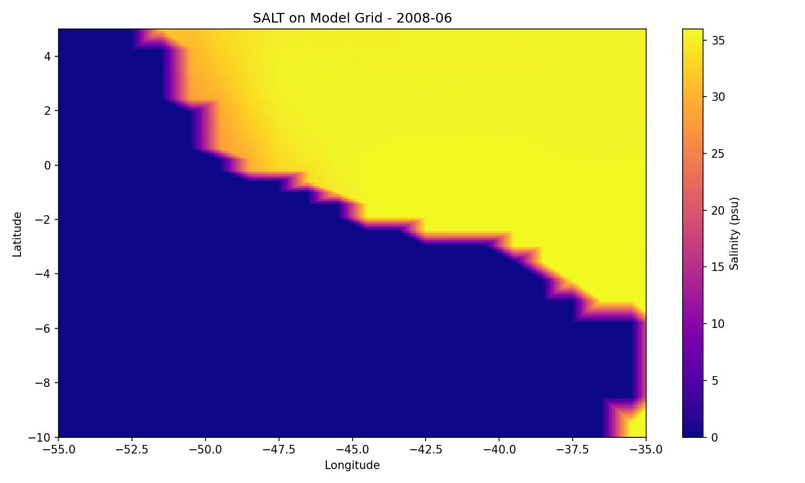

Ocean Modeling & HPC · CS 185C · 2025
Amazon River Outflow Along Coastal Brazil
Question: How does freshwater from the Amazon River affect sea surface salinity and currents along the coast of Brazil? I built a regional MITgcm ocean model of the northeastern Brazilian coast for 2008, using realistic bathymetry (GEBCO) and initial, boundary and external forcing conditions derived from ECCO v5. I added the river discharge as a surface freshwater flux.
I compiled the model with MPI and ran it in parallel on SJSU's Spartan HPC cluster using Slurm. Then I analyzed and visualized the output in Python across five variables (sea‑surface height, temperature, salinity and both current components). The results showed clear salinity gradients and sea‑surface‑height anomalies in the river plume, consistent with known oceanographic behavior.
View on GitHub →